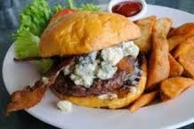

Why?
This is the bad guy. The culprit. You wouldn't think he could be so mean. High in fat? Yes. Cholesterol? Again, yes. Calories? Absolutely. But the bringer of swift and intense pain that lasts for more than a week....you have no idea.
This is the bad guy. The culprit. You wouldn't think he could be so mean. High in fat? Yes. Cholesterol? Again, yes. Calories? Absolutely. But the bringer of swift and intense pain that lasts for more than a week....you have no idea.
Ate a double cheeseburger Saturday night. Slept restlessly Saturday night (restlessly = moaning in sleep.) Sick in bed on Sunday. Better Monday. Had a hamburger Monday afternoon for lunch. Trying to figure out if a trip to the ER at 1 a.m. would be a good idea because of intense discomfort (intense = is this a heart attack or is a major organ going to explode?)
Desperate for relief from pain. Drink only fruit and vegetable juices and broth for 2 1/2 days. Pain backs off but doesn't completely disappear.
Pain is almost under control. Nights have tough moments but nothing like before. Time to figure out what to eat. Research many websites for information. Find conflicting information. All seem to agree that sugar, pork, eggs, and corn are evil incarnate. Start introducing foods one at a time. Tofu....no pain....ok. Fish....no pain....also ok. Brown rice....ok. Whew, life as we know it might possibly have meaning.
Food choices continuing to increase. Every two or three days try another food. Onions....one website said they would be bad, but they seem fine....so, ok. Chicken...supposed to be a no, no, per another site, but also ok. Potatoes fine too. Yeah! Potatoes with a little fat-free greek yogurt and green onions....pretty good stuff.
Creative meal planning means quality of meals doesn't have to be sacrificed even if a whole new set of rules is in play. Miso soup, Pho, Sushi rolls, and Greek Sandwiches on homemade Whole Wheat pita bread are only a few of the many options available. The main rules are avoid sugar, fats except olive oil, watch portions, and no corn or pork. Whole grains are used instead of refined grains. Dehydrated bananas provide sweetness and crunch when the munchies hit. We have only begun to scratch the surface of what is fair-game and pain-free.